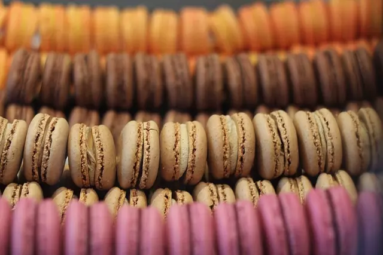

Macarons
Deléitate con la perfección dulce y delicada de nuestros macarons caseros.
Sumérgete en el mundo de los sabores dulces con nuestra receta de macarons. Estos delicados bocados franceses te cautivarán con su textura suave y sus vibrantes colores. Aprende a prepararlos de manera sencilla y crea tus propias combinaciones de rellenos para disfrutar de una experiencia culinaria única. ¡Anímate a hornear estos exquisitos dulces y sorprende a tus seres queridos con un toque de elegancia en cada mordisco!
Ingredientes
- 110g de almendra molida
- 200g de azúcar glas
- 3 claras de huevo a temperatura ambiente
- 50g de azúcar granulada
- Colorante alimentario en gel (opcional)
Paso a paso
- En un procesador de alimentos, mezcla el azúcar glas y la almendra molida hasta obtener una textura fina.
- En un tazón aparte, bate las claras de huevo a velocidad media hasta que se formen picos suaves.
- Agrega gradualmente el azúcar granulada a las claras batidas y sigue batiendo hasta obtener picos firmes y brillantes.
- Si deseas, agrega el colorante alimentario a las claras para obtener el color deseado.
- Añade la mezcla de azúcar glas y almendra a las claras batidas y mezcla con movimientos suaves y envolventes hasta que la masa sea homogénea.
- Transfiere la masa a una manga pastelera con una boquilla redonda de aproximadamente 1 cm de diámetro.
- Sobre una bandeja para horno forrada con papel de hornear, forma pequeños círculos con la masa, separados unos centímetros entre sí.
- Golpea suavemente la bandeja contra la encimera para eliminar las burbujas de aire de los macarons.
- Deja reposar los macarons durante 30-60 minutos para formar una costra en la superficie.
- Pre-calienta el horno a 150°C.
- Hornea los macarons durante 15-18 minutos o hasta que se formen "piernas" en la base de los macarons.
- Saca los macarons del horno y déjalos enfriar completamente antes de despegarlos del papel de hornear.
- Rellena los macarons con tu crema o ganache favorita y únelos para formar las galletas.
- Guarda los macarons en un recipiente hermético en el refrigerador durante unas horas antes de disfrutarlos para que desarrollen su sabor y textura adecuados.